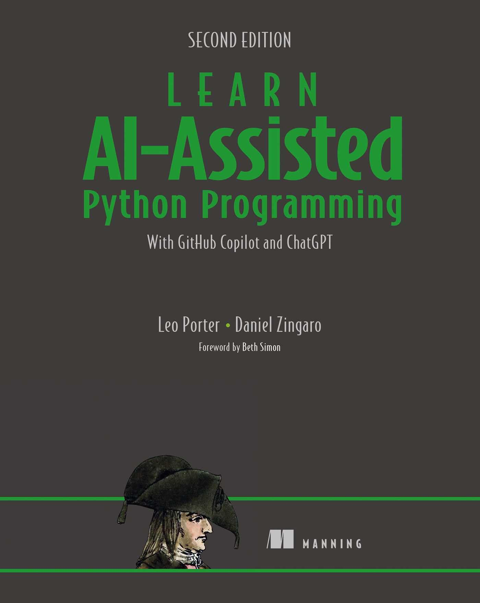

Lendo Código Python
PASIA - Aula T.3
DAC - ICET - Universidade Federal de Lavras
23/08/2025
O conteúdo dessa aula é baseado nos capítulo 4 e 5 do livro abaixo.

Introdução
Ler Código
Ler código significa entender o que o código faz ao examiná-lo.
Existem dois níveis de entendimento:
- Tracing description: entender o que cada linha de código faz.
- Entender o objetivo geral de um código (função, classe, etc.).
Ler Código
O 1º nível (tracing description) depende do conhecimento de estruturas e linguagem de programação.
Já o 2º nível (objetivo geral) é geralmente o que esperamos encontrar na docstring de uma função.
- E depende do entendimento de 1º nível.
Por que é importante a habilidade de ler código?
Ajuda a determinar se o código está correto:
- Nós usaremos testes para validar código.
- Mas podemos ganhar tempo se conseguirmos identificar erros mais óbvios no código, antes de gastar tempo escrevendo código de teste.
Para ter mais informações para os testes:
- Entender o código nos ajuda a identificar melhor os casos de testes que precisamos criar para validar a implementação.
Por que é importante a habilidade de ler código?
Para ajudar a escrever código:
- Por que escrever código se vamos usar o Copilot?
- Às vezes é mais rápido alterarmos nós mesmos o código, do que ficar mudando prompt até obter o código correto.
- E, por fim, há evidência científica de que conseguir explicar código linha a linha é pré-requisito para conseguir escrever código.
A ideia aqui não é entender cada detalhe de cada linha do código.
- E sim aprender a como usar o Copilot para chegar num meio termo entre:
- “Esse código faz mágica”
- e “Eu sei exatamente como cada linha de código funciona”.
Usando Copilot para Entender Código
Nas aulas anteriores escremos prompt para que o Copilot explicasse um trecho de código pra gente.
- Mas o Copilot também tem comandos específicos além de texto livre.
Podemos usar o comando /explain por exemplo.
- Selecionamos a função (ou trecho de código) que queremos entender e acessamos com o botão direito do mouse a opção Copilot -> Explain
- ou digitamos
/explainno chat (seja com Ctrl + I ou no chat).
- ou digitamos
Dica
Podemos complementar o comando /explain com mais detalhes.
Isso é especialmente útil para fazermos com que o Copilot entenda que queremos as explicações em português.
Vamos usar como exemplo a função melhor_palavra.
def melhor_palavra(palavras):
"""
palavras é uma lista de palavras.
Retorna a palavra com a maior pontuação.
"""
melhor = palavras[0]
max_pontos = numero_de_pontos(melhor)
for palavra in palavras[1:]:
pontos = numero_de_pontos(palavra)
if pontos > max_pontos:
melhor = palavra
max_pontos = pontos
return melhorPrimeira parte da explicação:
Veja que, na explicação, o Copilot já destacou pontos de dúvidas e sugeriu melhoria.
- Nem sempre ele faz isso. Demos sorte nessa vez. üòÉ
Se uma função tiver um código com o qual não temos familiaridade, podemos pedir uma explicação linha a linha.
- Usando
\explain linha a linha, por exemplo.
Como professor é incrível que agora os alunos tenham com quem tirar dúvidas quantas vezes for necessário.
Apenas lembre-se que a explicação do Copilot pode estar errada.
- Aí você pode pensar: então pra que ela serve?
Realmente pode ser frustrante.
- Mas na maioria dos códigos, especialmente mais simples, as explicações são corretas.
- E, sem o Copilot, se você tivesse dúvidas e procurasse um amigo ou no Google, poderia obter respostas erradas também.
Dica
Uma maneira de diminuir a possibilidade de erro é pedir a explicação mais de uma vez.
É bem raro que o Copilot explique errado mais de uma vez.
Vamos usar outro exemplo de explicação do Copilot.
- Suponha que você precise entender uma função já existente em um projeto.
Vamos ver a explicação do Copilot em português.
Veja que neste caso o Copilot fez uma explicação e sugeriu uma melhoria.
- Antes de avaliar a sugestão de melhoria é importante que você avalie se realmente entendeu a explicação dada para o código atual.
Por exemplo, se não tiver ficado claro como o método replace funciona, você pode pedir uma explicação mais detalhada sobre isso.
Você pode continuar pedindo mais informações do Copilot até julgar que tem um nível de entendimento adequado para a tarefa que precisa.
- Lembre-se do que falamos no início da aula
- Não é necessário entender cada detalhe do código.
- Mas temos que sair do estágio “Esse código faz mágica”.
- Para conseguirmos depois validar o nosso código.
- E assim resolver a tarefa que precisamos.
Voltando na explicação inicial dada pelo Copilot
- você alteraria seu código para usar a solução “mais limpa e eficiente”, segundo ele, que usa o módulo
re?
Que critérios adotar para decidir aceitar ou não a sugestão?
Dica
Minha sugestão é: use a opção que você entenda melhor.
Você pode já ficar satisfeito com o código original, ou pode pedir ao Copilot explicações sobre a sugestão de melhoria. E depois de ter entendido as duas opções, escolher a que te parece melhor.
Dica
É melhor ter mais rapidamente uma versão do sistema que funciona corretamente e depois otimizá-la, se necessário, do que tentar já otimizar código antes mesmo de saber se ele vai atender o que precisa.
- Pode ser, por exemplo, que uma função que você está otimizando agora acabe nem sendo usada mais adiante.
Os 10 Principais Tópicos em Python
O livro que estamos usando como referência, lista os 10 principais tópicos em Python que precisamos entender
- para conseguir acompanhar tudo que é apresentado no livro.
Como você já fez disciplinas de programação, você pode ter um entendimento razoável dessas estruturas em outras linguagens.
- Mas é importante que consiga entendê-las na sintaxe do Python.
- Se você já programa em Python é bom revisar seu conhecimento.
- Se está começando na linguagem agora é uma boa hora de conhecê-las.
Os 10 Principais Tópicos em Python
- Funções
- Variáveis
- Condicionais
- Strings
- Listas
- Loops
- Indentação
- Dicionários
- Arquivos
- Módulos
Fiquei pensando na melhor forma de passar esse conteúdo nessa disciplina.
- Poderia ser interessante para alguns alunos fazer uma revisão completa desses conceitos na aula.
- Mas poderia ser tedioso para outros uma aula em formato expositivo.
Creio que é muito mais interessante estudar as estruturas de maneira mais prática e interativa.
- Especialmente para quem já fez outras disciplinas de programação.
E, como temos Assistentes de IA à nossa disposição
- por que não utilizá-los para apoiar essa tarefa.
Em vez de sair simplesmente perguntando para um Assistente de IA o que são esses conceitos,
- podemos usar um pouco de Engenharia de Prompt para tornar esse processo mais interessante.
Ainda vamos ter aula específica sobre Engenharia de Prompt.
- E pode ser que ao chegar nela a gente conclua que a abordagem que vou sugerir poderia ser melhor.
- Mas o que preparei já pode ser um bom começo.
Um pouco de Engenharia de Prompt
Algumas das recomendações mais comuns de Engenharia de Prompt são:
- Dar contexto.
- Definir o papel (persona) do modelo.
- Ser claro e específico.
- Definir o formato da resposta esperada.
- Iterar e refinar o prompt.
Seguindo essas ideias pensei no seguinte formato de estudo
- que você pode (e deve) adaptar para a sua realidade.
Dar contexto
Considere que sou estudante de um curso de TI. Já fiz disciplinas introdutórias de programação, mas tenho certa dificuldade dificuldade com conceitos de programação. Conheço razoavelmente a linguagem Java e agora gostaria de aprender Python.
Definir o papel (persona) do modelo
Atue como um professor de programação paciente, criativo e com ótima didática.
Ser claro e específico
Poderia me guiar por uma sessão de conversa que apresente de forma didática a linguagem Python comparando as construções com Java? Gostaria de abordar essas 10 construções em Python: Funções, Variáveis, Condicionais, Strings, Listas, Loops, Indentação, Dicionários, Arquivos e Módulos.
Definir o formato da resposta esperada
Gostaria que a sessão fosse interativa, apresentando um conceito de cada vez, com exemplos práticos, comparações com Java e perguntas de múltipla escolha para fixação do conteúdo.
Iterar e refinar o prompt
É comum que um prompt não funcione como gostaríamos. Podemos então alterá-lo para conseguir o que queremos.
Nesse caso como estou pedindo uma sessão interativa, podemos experimentá-la e, se ao longo do processo não estivermos satisfeitos, interrompemos a sessão e fazemos um novo prompt.
Podemos montar um texto corrido com tudo que escrevemos ou você pode ser mais específico usando um prompt estruturado:
Contexto: Considere que sou estudante ...
Persona: Atue como um professor ...
Tarefa: Poderia me guiar ...
Formato: Gostaria que a sessão fosse ...Conhecendo/revisando os 10 tópicos principais em Python
Sessão interativa com Copilot
Vamos então testar!
Contexto: Considere que sou estudante de um curso de TI. Já fiz disciplinas introdutórias de programação, mas tenho certa dificuldade dificuldade com conceitos de programação. Conheço razoavelmente a linguagem Java e agora gostaria de aprender Python.
Persona: Atue como um professor de programação paciente, criativo e com ótima didática.
Tarefa: Poderia me guiar por uma sessão de conversa que apresente de forma didática a linguagem Python comparando as construções com Java? Gostaria de abordar essas 10 construções em Python: Funções, Variáveis, Condicionais, Strings, Listas,Loops, Indentação, Dicionários, Arquivos e Módulos.
Formato: Gostaria que a sessão fosse interativa, apresentando um conceito de cada vez, com exemplos práticos, comparações com Java e perguntas de múltipla escolha para fixação do conteúdo.Dica
Durante a sessão interativa o Copilot deve te pedir para escrever trechos de código em Python e, para isso, você precisará pular linha. Mas se usar ENTER você envia o prompt incompleto. Use Shift + ENTER para pular linha.
Vamos fazer uma sessão interativa dessas aqui na sala para revisar os conceitos.
- E é altamente recomendável que você faça depois em casa, adaptando o prompt à sua realidade.
- Para tornar o processo ainda mais interativo, vamos usar o PollEverywhere para responder às perguntas durante a sessão.
Dica
Além de experimentar prompts diferentes, você pode também usar Assistentes de IA diferentes.
Eu testei com Copilot, ChatGPT e Gemini e a interação de cada um deles foi diferente. Gemini pediu para escrever código Python, ChatGPT esqueceu de tratar funções :)
Mas, lembre-se, se usar o mesmo prompt de novo pode ter uma interação diferente.
Dinâmica em duplas
Vamos passar agora para uma segunda parte de fixação das 10 principais estruturas em Python.
Quando preparei a aula, logo após a sessão interativa, pedi ao Copilot para gerar 20 exercícios de fixação sobre as 10 estruturas do Python.
- Vamos formar duplas e cada dupla vai responder os exercícios.
- Não é necessário identificar os nomes, basta dar um nome para a dupla.
- Anote o gabarito de vocês no caderno para facilitar a próxima etapa da dinâmica.
Depois de respondidos os exercícios, cada dupla receberá as respostas de outra dupla.
- E preencher a folha de conferência.
- Justificando as respostas incorretas.
Para finalizar vamos comparar as respostas com o gabarito oficial.
- a
- b
- b
- c
- b
- c
- c
- a
- a
- b
- a
- c
- c
- b
- a
- a
- a
- a
- a
- a